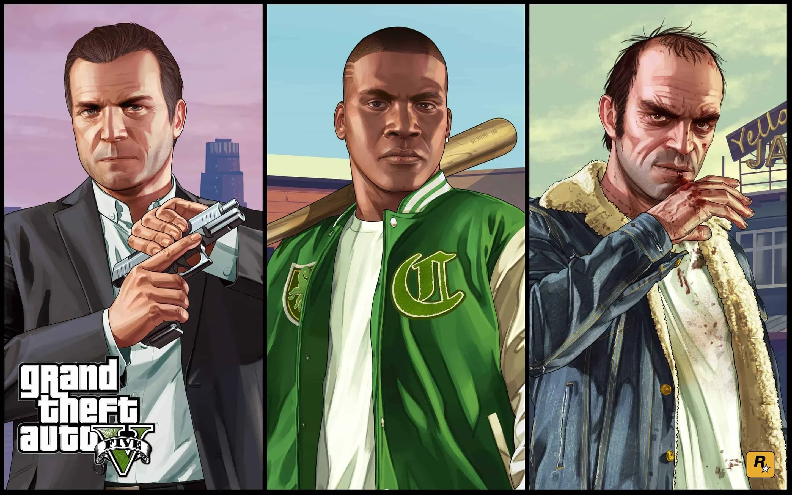

Storyn
Spelet utspelar sig i den fiktiva delstaten San Andreas och följer tre kriminella: Michael De Santa som är en pensionerad bankrånare, Franklin Clinton som är en gängmedlem och Trevor Philips som är en labil knarklangare.

Spelet utspelar sig i den fiktiva delstaten San Andreas och följer tre kriminella: Michael De Santa som är en pensionerad bankrånare, Franklin Clinton som är en gängmedlem och Trevor Philips som är en labil knarklangare.
Staden Los Santos är baserad på Los Angeles och det finns allt från lyxiga skyskrapor till farliga slumområden och ökenlandskap.
GTA Online är en värld där du kan bygga upp ditt eget kriminella imperium med vänner.